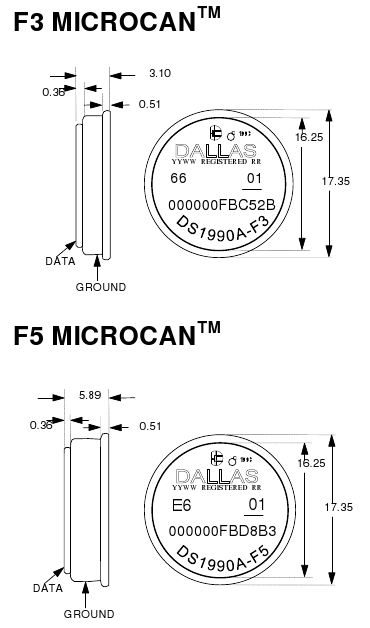

Ключи бывают разные. Самыми лучшими, в смысле уникальности номера являются ключи стандарта Dallas 1990A
На них нанесён код, который зашит в микросхему, поэтому его можно записать заранее, до потери таблетки, а затем изготовить такую же.
Код Dallas'ов следует читать справа налево, а именно 0156550E0A000099, причём последний байт является контрольной суммой, а первый - кодом семейства.То есть, уникальность номера обеспечивают 6 байт, что равно 48 бит, и соответствует количеству 281474.9767 миллиардов (два в степени 48).Кстати, обратите внимание на два последних байта. Они равны нулю( 00 00). Это потому, что на данный момент выпущено гораздо меньше ключей, чем могло бы быть. Например, эта таблетка по счёту 1448414730-я.

Но Dallas'ы дорогие, потому что импортные, поэтому наши разработчики пошли несколькими путями: во - первых, были выпущены микросхемы К1233КТ1 и К1233КТ2, которые дешевле, но по уникальности кода уступают Dallas'ам. Например, К1233КТ1 имеет только 2 байта кода (65536 комбинаций), а К1233КТ2 - 268435456 комбинаций (28 информационных бит). Во - вторых, был выпущен аналог ключа Dallas ключ ТМ-2003 производства Метаком http://www.metakom.ru